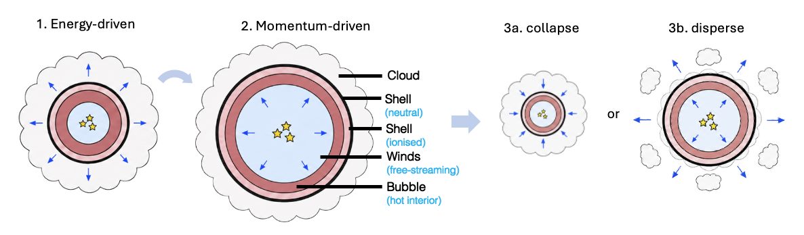

I am interested in the galactic baryon cycle, focusing on how young stars disperse their natal molecular clouds and redistribute gas into the surrounding interstellar medium. To do so, I develop TRINITY, a code that models the evolution of interstellar bubbles under the influence of important stellar feedback processes (stellar winds, photoionised gas and radiation). I also work with observations from the PHANGS and SDSS‑V Local Volume Mapper surveys to test these models against real star‑forming regions.

Molecular clouds in nearby galaxies are cleared within a few million years of forming their first massive stars, before any of those stars explode as supernovae. TRINITY follows the pre-supernova feedback channels together — stellar winds, direct and dust-reprocessed radiation pressure, and the pressure of photoionised gas — by integrating the equation of motion of a single swept-up shell from the first winds to the shell's fate: dispersal of the cloud, or stalling and re-collapse. It succeeds WARPFIELD, keeping that code's speed while adding photoionised-gas pressure as an explicit driver and a choice of cloud density profile. Paper I presents the model and its validation; I am now using it to survey cloud mass, density, star-formation efficiency and metallicity.
TRINITY predicts how bubbles grow and expand, which feedback processes drive them, and how many ionising photons escape their H II regions. These predictions can be tested against observations of nearby star-forming regions.
I am currently using spectroscopy from the SDSS-V Local Volume Mapper to study the Rosette Nebula and investigate how its central star cluster has shaped the surrounding gas. I also contribute TRINITY models to studies of a young bubble in the central starburst of NGC 253, observed with JWST, and of neutral atomic hydrogen around the Orion Nebula.
Before working on TRINITY, I studied how many ionising photons escape from H II regions. In my first paper, I combined LEGUS star-cluster catalogues with SIGNALS spectroscopy of NGC 628 to constrain the escape fraction of Lyman-continuum photons from individual regions. I later contributed to a PHANGS study of the stellar associations powering H II regions and the escape of their ionising radiation.
 The Orion A molecular cloud in the infrared. Credit: ESO/VISION survey
The Orion A molecular cloud in the infrared. Credit: ESO/VISION survey